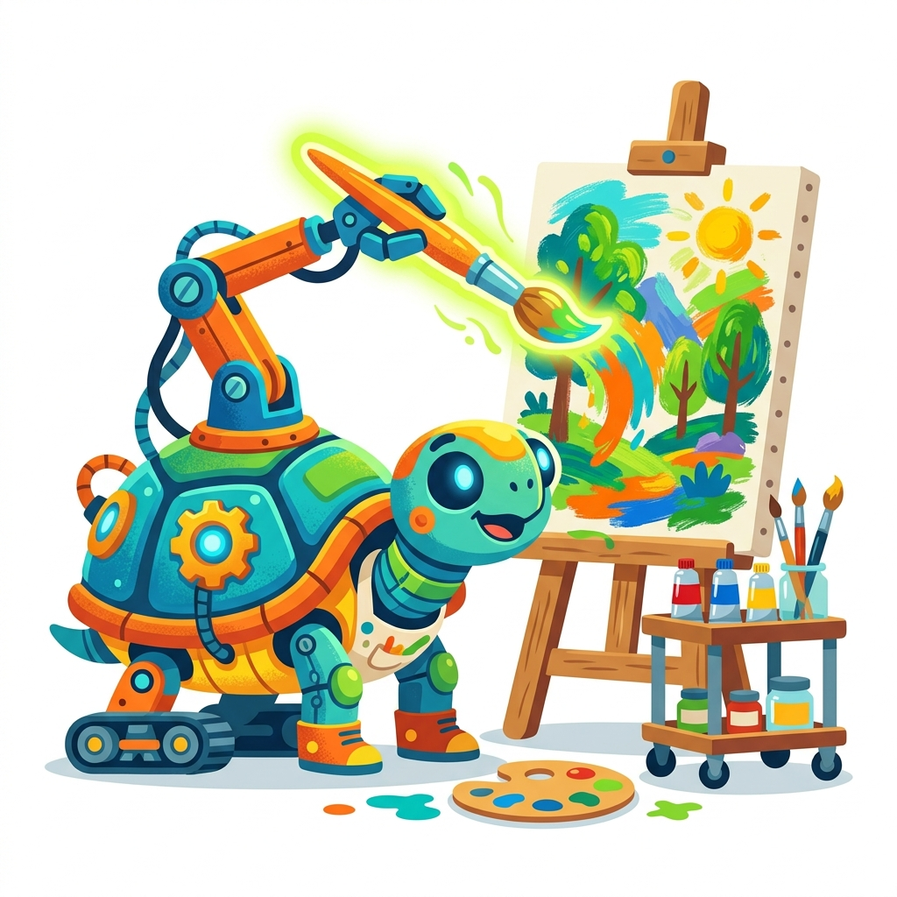

Note: Turtle graphics usually pop open a new drawing window on your computer. In our browser, the output might look different!
To use the turtle, we have to invite it to our program first using the import spell.
You can tell the turtle to move forward by giving it a distance (like 100 steps). As it moves, it draws a line!
The turtle can turn! You have to tell it which way (left or right) and how many degrees (like a circle is 360 degrees, a corner is 90 degrees).
Turtles don't just draw in black. You can change their pen color to make beautiful art!
If you want the turtle to move without drawing a line, you can lift its pen up! Then put it back down to start drawing again.
Can you make the turtle do your bidding?